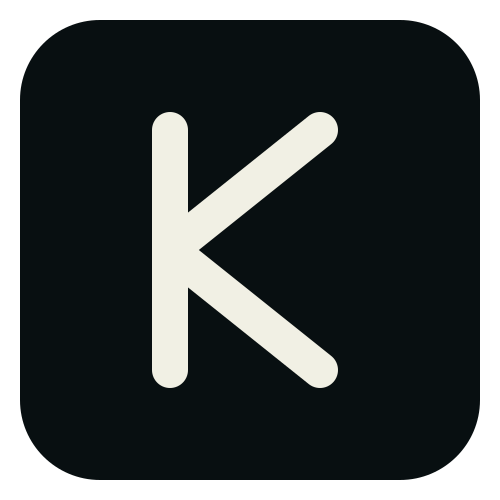
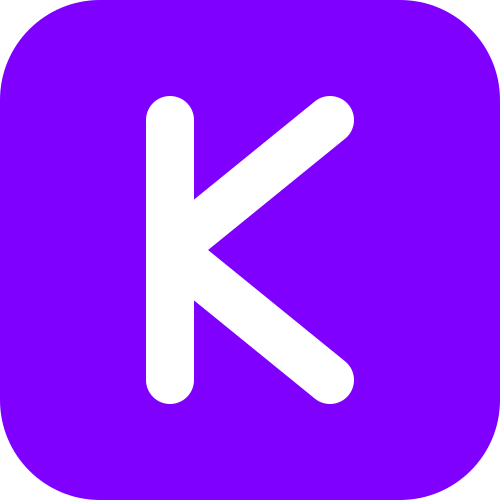
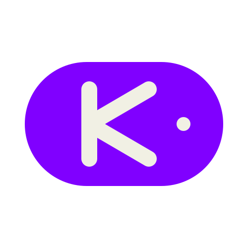
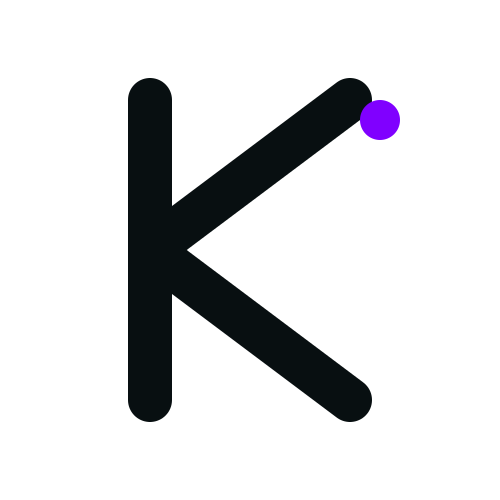
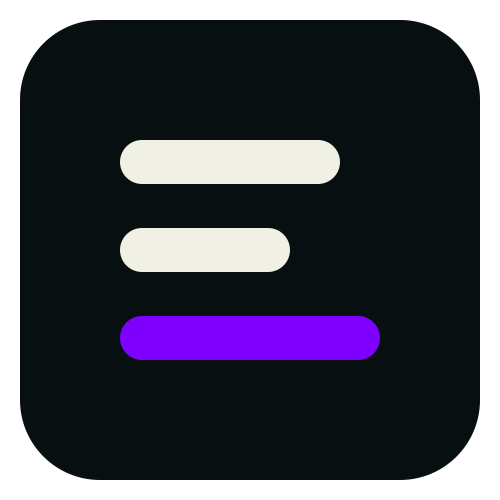
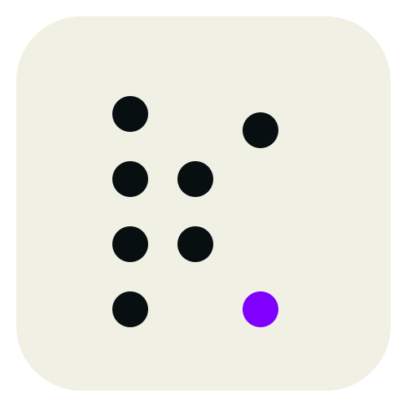

Editorial, geometric. Ink square with a cream K. The default safe choice.
16
28
64
Brand exploration — logo concepts
Each is a single SVG that scales cleanly to favicon size. Compare on
cream and ink backgrounds, at three sizes (16 px favicon / 28 px nav /
96 px hero). Pick a winner and we copy it over /logo.svg.

Editorial, geometric. Ink square with a cream K. The default safe choice.

K cut as negative space from a brand-purple square. Strong app-icon silhouette.

Pill that mirrors the StackedPill UI vocabulary. Logo and product feel like one system.

Just the angle bracket, ink, no frame. Code-evocative; pairs with editorial type as a glyph.

Three stacked bars; the third is brand purple. Most abstract — reads as motion / layered systems.

K formed by dots in a 5×5 constellation. Data / systems-thinking angle.